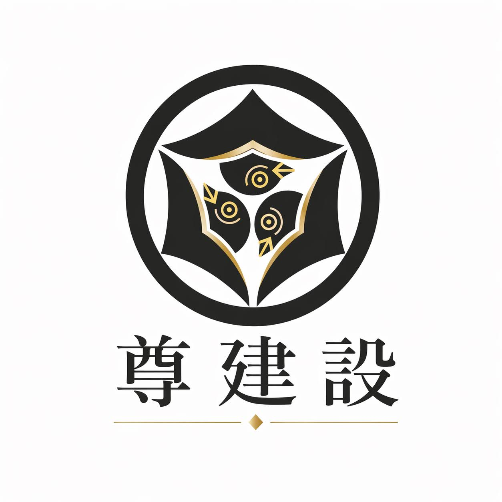

作業前の確認
当日の作業内容、危険箇所、使用する工具や資材、周囲の状況を確認します。変更点がある場合は関係者と共有し、認識を合わせます。

株式会社 尊建設TAKERU CONSTRUCTIONSAFETY & QUALITY
安全を最優先に、基本を守った丁寧な施工に取り組みます。
SAFETY & QUALITY
建設現場では、作業する人の安全、周囲への配慮、施工品質の確保が欠かせません。尊建設では、現場ごとの条件を確認し、整理整頓、保護具の着用、作業前確認、図面・寸法の確認など、日々の基本動作を大切にします。
当日の作業内容、危険箇所、使用する工具や資材、周囲の状況を確認します。変更点がある場合は関係者と共有し、認識を合わせます。
ヘルメットや安全帯など、作業内容に応じた保護具を適切に使用します。電動工具や脚立なども使用前に状態を確認します。
通路や作業場所を整理し、つまずきや落下物などの危険を減らします。作業後の清掃までを仕事の一部として取り組みます。
施工前と施工中に図面、基準線、水平・垂直、寸法を確認します。設備や仕上げなど後工程との取り合いにも配慮します。
使用する材料の種類、数量、状態を確認し、用途に合わせて施工します。不具合や疑問がある場合は、そのまま進めず確認します。
現場で生じた変更、破損、予期しない状況を速やかに共有します。一人の判断だけで進めず、関係者との連携を重視します。
代表がこれまでの現場で学んだ、建てた後の工程まで考える姿勢、安全について話し合う文化、若い世代へ技術をつなぐ考え方を、尊建設の仕事にも生かしていきます。
工事内容や現場条件を確認したうえで対応をご案内します。
お問い合わせ →